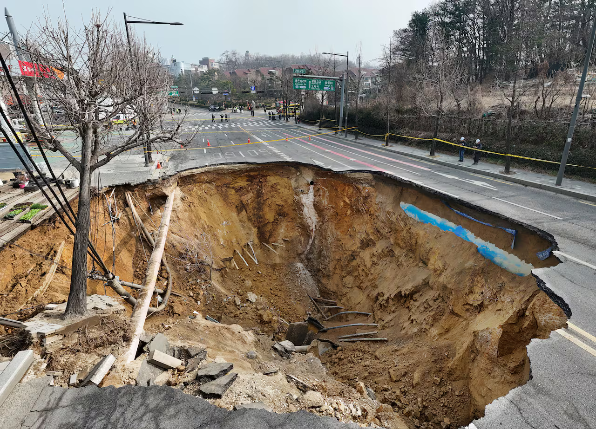
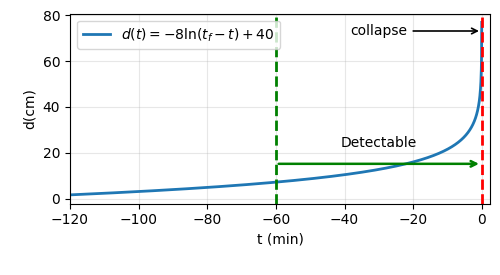
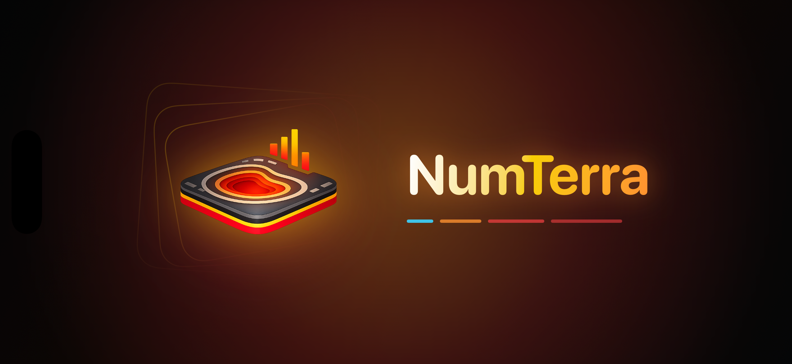
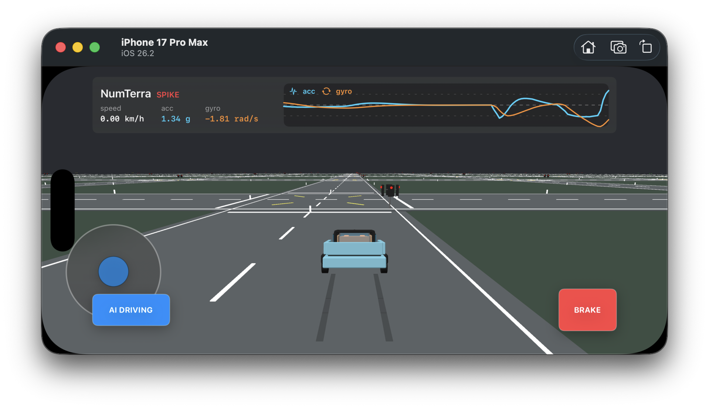

Q1. 나의 아이디어를 한 줄로 소개해주세요.
도시가 스스로 위험을 감지하게 만드는, 차량 주행 데이터 기반 싱크홀 조기감지 Physical AI 플랫폼입니다.
Q2. 아이디어를 떠올린 배경 이야기를 들려주세요.
싱크홀은 갑자기 생기는 사고처럼 보이지만, 실제로는 도로 아래 지반과 포장층의 변화가 누적되다가 어느 순간 붕괴로 드러나는 도시 재난입니다. 문제는 위험이 존재하지 않는 것이 아니라, 그 위험을 충분히 자주, 충분히 넓게, 충분히 낮은 비용으로 관측하기 어렵다는 데 있습니다. 기존 점검은 정밀하지만 인력, 장비, 예산의 제약 때문에 주기적으로 이루어질 수밖에 없습니다. 그러나 도로는 매일 변하고, 싱크홀 전조는 정상 주행, 맨홀, 포트홀, 과속방지턱, 노면 요철 같은 방해 신호 속에 섞여 나타납니다. 그래서 필요한 것은 더 비싼 일회성 점검만이 아니라, 이미 도로 위를 달리고 있는 차량을 이동형 감지망으로 바꾸는 새로운 관측 방식입니다.

이 문제의식을 바탕으로 서울대 학부생 심화연구 혁신 인재 지원사업에 싱크홀 전조 탐지 아이템으로 지원했고, 예선 합격을 경험했습니다. 이번 아이디어는 당시의 문제의식을 보완해 더 실현 가능한 사업 구조로 발전시킨 것입니다. 핵심은 붕괴 시점 직전의 큰 이상만 찾는 것이 아니라, 그보다 앞서 반복적으로 누적되는 미세한 싱크홀 패턴을 읽어내는 데 있습니다.

Q3. 아이디어는 누구의 어떤 문제를 해결해주나요?
해결하려는 문제는 도로 안전 관리의 관측 공백입니다. 지자체, 도로관리기관, 공공 인프라 운영기관은 넓은 도로망을 관리해야 하지만 모든 구간을 상시 정밀 점검하기 어렵습니다. 위험 의심 구간을 미리 좁히지 못하면 점검 예산과 인력은 넓게 흩어지고, 실제 위험 구간은 늦게 발견될 수 있습니다. 이 문제를 풀기 위해 구상한 서비스가 NumTerra입니다. NumTerra라는 이름은 수치 신호를 뜻하는 Num과 땅, 지반, 도로 환경을 뜻하는 Terra를 결합한 것입니다. 즉 NumTerra는 차량이 매일 만들어내는 수치 신호를 지반과 도로의 위험 정보로 해석하는 브랜드입니다. 단순한 신고 앱이 아니라, 도로 위의 흔들림과 차량 물리를 학습해 도시 안전 데이터를 만드는 Physical AI 서비스라는 의미를 담았습니다.

초기 고객은 지자체와 도로관리기관, 공공 인프라 운영기관입니다. NumTerra는 정밀 탐사를 대체하는 장비가 아니라, 어디를 먼저 점검해야 하는지 알려주는 조기 선별 레이어입니다. 공공기관은 넓은 도로망에서 위험 후보 구간을 더 빠르게 좁힐 수 있고, 점검 예산과 인력을 더 설득력 있게 배치할 수 있습니다. 핵심 기술은 미세한 싱크홀 패턴 탐지입니다. 같은 도로를 달려도 차량의 속도, 무게, 타이어, 노면 상태에 따라 센서 반응은 달라지기 때문에 단순한 충격 감지만으로는 충분하지 않습니다. NumTerra는 먼저 도로 정보와 차량 물리를 Physical AI로 학습시켜 정상 주행 반응과 이상 반응을 구분하고, 이후 실제 주행 데이터가 쌓일수록 위험 후보 구간을 더 정교하게 갱신하는 방식으로 발전합니다.
Q4. 아이디어를 어떻게 실현하고 싶으신가요?
실현 전략은 앱 기반 데이터 수집, 차량 물리와 도로 정보 학습, 위험 후보 구간 분석, B2G 매출화, B2C 확장 순서로 진행하려고 합니다. 먼저 Physical AI 기반 앱을 출시 준비 중입니다. 앱은 주행 중 speed, acc, gyro, 위치, 시간 데이터를 수집하고, 같은 구간을 반복 주행하면서 도로의 평상시 반응을 학습합니다. 이때 단순히 흔들림이 큰 구간을 표시하는 것이 아니라, 차량 속도와 물리 반응을 함께 고려해 과속방지턱, 맨홀, 포트홀, 일반 요철과 싱크홀 전조 후보를 구분하는 방향으로 설계합니다.

초기 매출은 B2G 방식으로 만들고자 합니다. 지자체와 도로관리기관을 대상으로 위험 후보 구간 리포트, 정기 모니터링 대시보드, 실증 프로젝트를 제공하고, 이후 도로 유지보수 업체와 공공 인프라 운영기관으로 확장할 수 있습니다. 공공기관 입장에서는 모든 도로를 무작위로 점검하는 것보다, 데이터로 의심 구간을 좁힌 뒤 정밀 탐사를 투입하는 방식이 예산과 책임 측면에서 설득력이 있습니다. 그 다음 단계에서는 B2C 기반 사용자 편의성을 추가합니다. 운전자에게 위험 의심 구간 알림, 안전 경로 안내, 지역 도로 상태 정보, 시민 제보 기능을 제공하고, 충분한 데이터가 쌓이면 도시 단위 도로 안전 데이터 플랫폼으로 확장할 수 있습니다. 싱크홀의 문제는 보이지 않는 것 자체가 아니라 상시 관측되지 않는 것에 가깝습니다. NumTerra는 이 관측 공백을 차량 데이터와 Physical AI로 메우고, 대표자의 전기정보공학 기반 신호처리와 수치해석 역량, AI 모델링 역량을 결합해 단순한 아이디어가 아니라 실제 앱과 데이터 사업으로 이어지는 서비스를 만들고자 합니다.
Q5. 사업 분야를 선택해주세요.
IT
Q8. 나의 아이디어를 소개하는 영상을 링크로 제출해주세요.
https://youtube.com/shorts/8tRA3yvEUPM